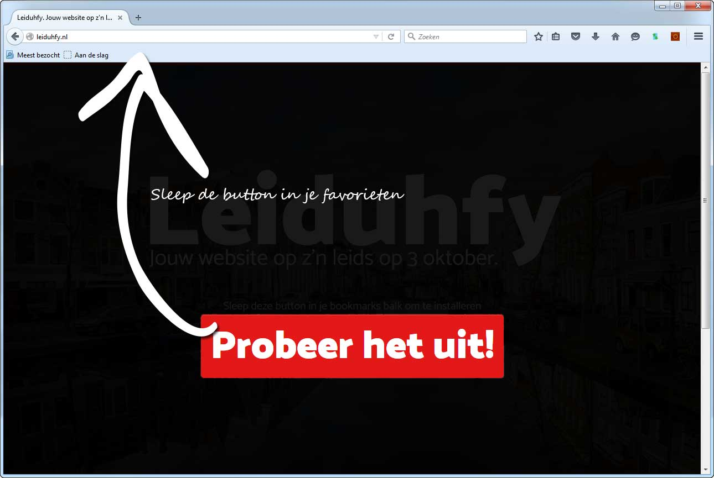
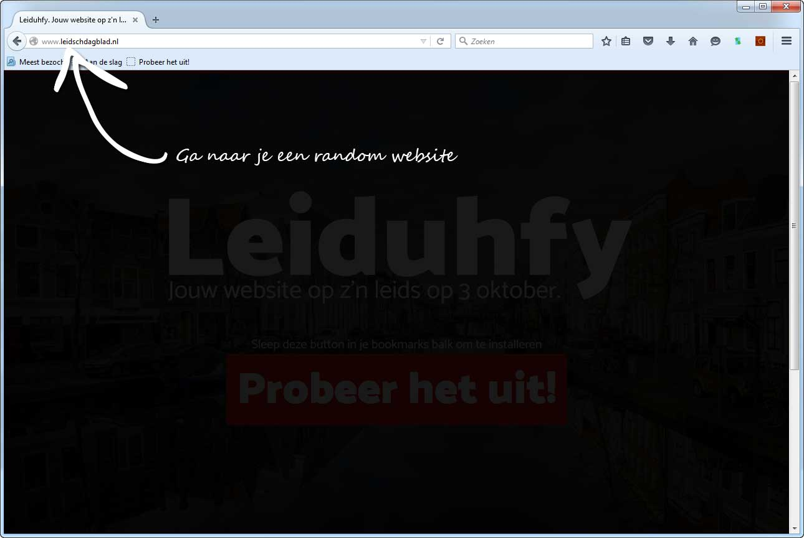
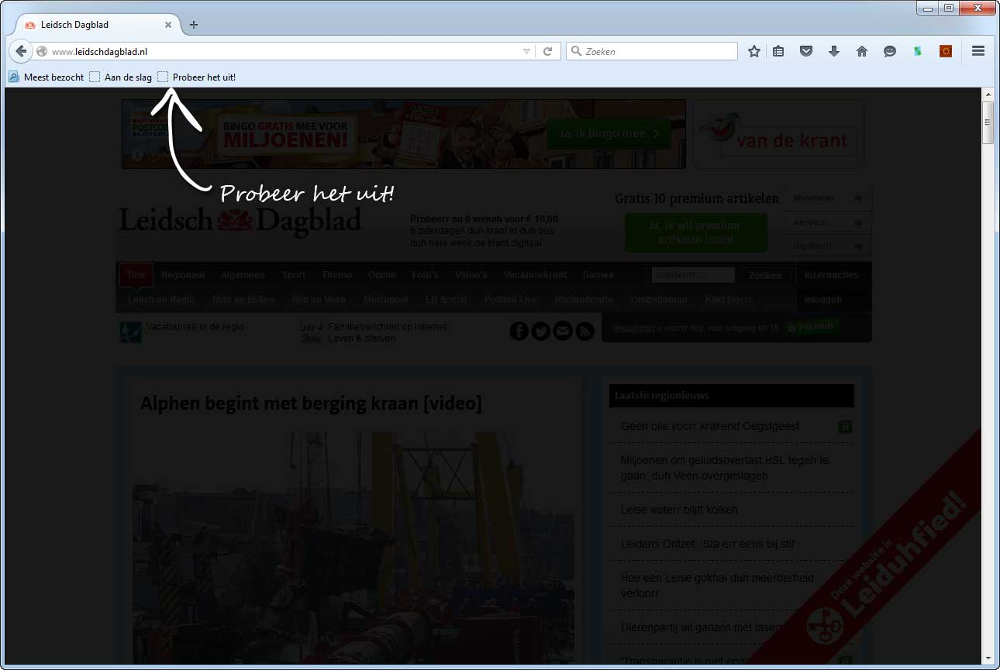
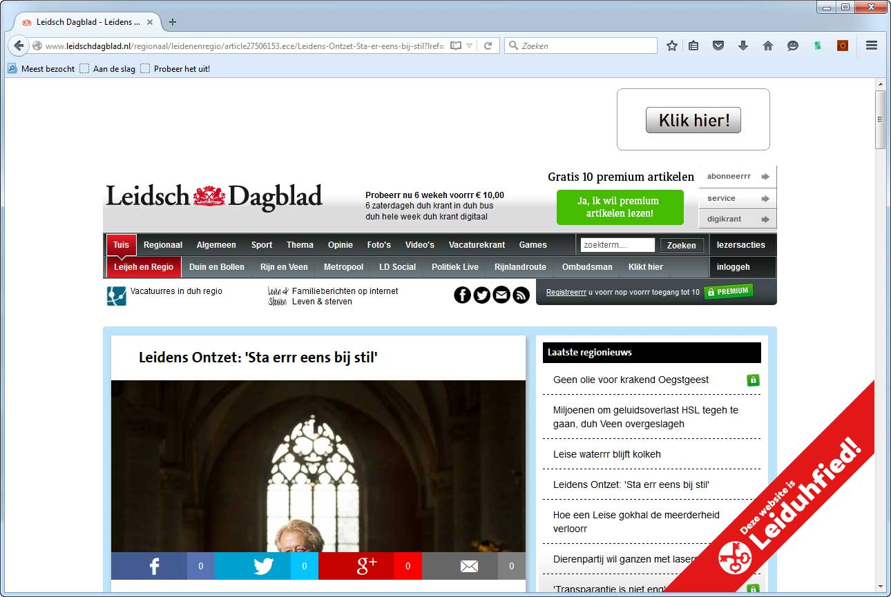

Wil je op 3 oktober Leiduhfied zijn?
Kopieër en plak de onderstaande insluitcode in je website
Wil je op 3 oktober Leiduhfied zijn?
Kopieër en plak de onderstaande insluitcode in je website
Wil je het uitproberen?
Sleep de onderstaande knop in je favorieten en probeer het uit op een website. (howto)
Probeer het uit!Hoe het uitproberen werkt
De knop werkt alleen binnen je eigen browser :)
Gebruik de insluitcode om je website permanent te leiduhfy'n
   